아침마다 나오는 재채기와 콧물, 오래가는 기침, 마른 목과 쉰 목소리처럼 코와 목의 불편은 계절과 공기, 잠과 생활 습관에 따라 달라집니다. 좋은꿈참사랑한의원은 한방안·이비인후·피부과 진료과목에서 증상이 나타나는 때와 생활 환경을 먼저 여쭙고, 다른 검사가 먼저 필요한 신호는 따로 안내합니다.
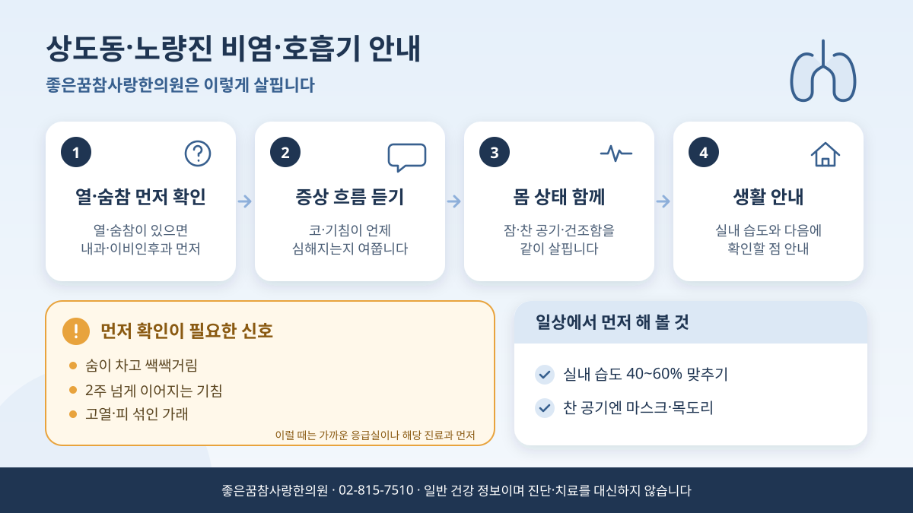
비염·호흡기, 쉬운 말로 하면
코와 목, 기관지는 바깥 공기를 처음 만나는 길입니다. 찬 공기, 건조한 실내, 미세먼지, 피로가 겹치면 같은 사람도 계절마다 불편이 달라질 수 있어 증상과 함께 언제, 어디서 심해지는지를 살핍니다.
자주 듣는 이야기
- 아침에 일어나면 재채기와 맑은 콧물이 쏟아진다
- 감기는 나았는데 기침이 몇 주째 남아 있다
- 입을 벌리고 자서 아침마다 목이 마른다
- 미세먼지 많은 날 목이 칼칼하고 기침이 난다
- 목 뒤로 무언가 넘어가는 느낌에 헛기침을 자주 한다
- 말을 많이 하는 일을 해서 목이 자주 쉰다
먼저 이렇게 여쭙니다
- 증상이 시작된 시기와 심해지는 시간대·계절
- 잠자는 방의 온도와 습도, 코골이와 입을 벌리고 자는지
- 흡연 여부와 일하며 목을 쓰는 정도
- 열, 가래의 색, 숨찬 정도
- 복용 중인 약과 그동안 받은 검사
일상에서 먼저 해 볼 수 있는 것
- 실내 습도를 적당히 유지하고 자기 전 따뜻한 물 마시기
- 미세먼지 많은 날은 외출 뒤 손과 얼굴 씻기
- 찬 공기를 갑자기 들이마시지 않도록 목도리나 마스크 쓰기
- 목을 많이 쓴 날은 말하는 시간을 줄이고 쉬기
- 증상이 심한 날의 날씨와 장소를 적어 두기
한의원에서 함께 살필 수 있는 경우
검사에서 큰 이상은 없다고 들었지만 코와 목의 불편이 계절마다 반복되는 경우, 감기 뒤 기침이 오래 남는 경우, 잠과 피로가 함께 흔들리는 경우에 몸의 온기와 잠, 소화를 함께 살핍니다.
진찰 후 필요하다고 판단될 때 침, 온열, 한약 상담 등을 상태에 맞게 이어서 씁니다. 쓰고 있는 흡입기나 알레르기약은 처방한 의사와 상의 없이 줄이거나 끊지 않습니다.
먼저 내과·이비인후과 확인이 필요한 신호
아래와 같은 경우는 내과, 이비인후과, 응급실 진료를 먼저 받으세요.
- 숨이 차거나 쌕쌕거리는 소리가 날 때
- 높은 열이 며칠째 이어질 때
- 가래나 콧물에 피가 섞여 나올 때
- 기침이 3주 넘게 이어지거나 체중이 함께 줄 때
- 가슴이 아프거나 답답할 때
- 쉰 목소리가 2주 넘게 이어질 때
계절별로 살피는 점
코와 목의 불편은 계절이 바뀔 때 함께 바뀌는 경우가 많습니다. 지난해 같은 계절에 어땠는지 기억해 두면 상담에 참고가 됩니다.
- 봄: 꽃가루와 황사가 많은 날은 외출 뒤 손과 얼굴 씻기
- 여름: 냉방으로 차가워진 실내와 바깥의 온도 차 줄이기
- 가을: 아침저녁 기온 차가 커지는 때 목을 따뜻하게 하기
- 겨울: 난방으로 건조해진 실내 습도 챙기기
좋은꿈참사랑한의원 진료는 이렇게 진행됩니다
접수 뒤 상담에서 증상이 심해지는 때와 생활 환경을 먼저 듣고, 필요하다고 판단될 때 진찰합니다. 다시 오시면 지난번 이야기부터 이어서 여쭙습니다. 열이 나거나 감기 기운이 있을 때는 방문 전에 전화로 알려 주세요.
상도동·노량진에서
노량진 학원가와 사무실처럼 실내에 오래 머무르며 말을 많이 하는 분, 지하철 7호선과 1·9호선으로 출퇴근하며 찬 공기와 미세먼지를 자주 만나는 분이 많은 동네입니다. 좋은꿈참사랑한의원은 상도역 3번 출구에서 약 200m 거리에 있고, 노량진역 3번 출구 쪽 정류장에서는 마을버스 동작01번으로 오실 수 있습니다.
자주 묻는 질문
아침마다 콧물과 재채기가 나는데 한의원에서 상담할 수 있나요?
네. 증상이 심한 시간대와 계절, 잠자는 환경을 먼저 여쭙고 몸의 온기와 잠을 함께 살핍니다. 한쪽 코만 계속 막히거나 코피가 잦으면 이비인후과 확인을 먼저 권합니다.
감기는 나았는데 기침이 계속되면 어떻게 하나요?
기침이 시작된 때와 가래, 밤에 심해지는지를 여쭙습니다. 3주 넘게 이어지거나 숨이 차면 내과 진료를 먼저 받으세요.
미세먼지 많은 날 목이 아플 때는 어떻게 하면 좋을까요?
외출을 줄이고 마스크를 쓰며, 돌아와서 손과 얼굴을 씻고 물을 자주 마셔 보세요. 숨이 차거나 열이 나면 내과 진료가 먼저입니다.
목소리를 많이 쓰는 직업인데 자주 쉬어요.
말하는 시간, 물 마시는 습관, 잠, 역류 증상을 함께 살핍니다. 쉰 목소리가 2주 넘게 이어지면 이비인후과 진료를 권합니다.
입을 벌리고 자서 아침마다 목이 마른 건 왜 그런가요?
코가 막히거나 자는 자세 때문일 수 있어 코골이와 잠의 질을 함께 여쭙습니다. 자다가 숨이 멈춘다는 말을 들었다면 수면 검사가 필요한지 확인해 보세요.
아이 비염도 상담하나요?
네, 한방소아과 진료과목에서 함께 봅니다. 아이의 잠, 식사, 감기 횟수를 여쭙고, 숨이 차거나 고열이 있으면 소아청소년과 진료를 먼저 권합니다.
담배를 끊었는데 아침 가래가 계속돼요.
금연한 시기와 가래의 양·색, 숨찬 정도를 여쭙습니다. 가래에 피가 섞이거나 체중이 줄면 내과 진료를 먼저 받으세요.
흡입기나 알레르기약을 쓰고 있어도 한의원 진료를 받을 수 있나요?
네. 쓰고 있는 약의 이름과 쓰는 방법을 알려 주세요. 약은 처방한 의사와 상의 없이 줄이거나 끊지 않습니다.
감수: 좋은꿈참사랑한의원 대표원장 이종호 · 마지막 확인 2026-11-26 · 일반적인 건강 정보이며 진단·치료를 대신하지 않습니다.
비염·호흡기 글 모아 보기 (38편)

냄새를 잘 못 맡고 음식 맛까지 밍밍해진 후각 저하는 어떻게 살피나요?
후각 저하는 코막힘, 감기 뒤 후각 신경의 지침, 나이 등 여러 이유로 냄새를 덜 맡게 되는 상태입니다. 이비인후과 검사와 함께, 한의원에서는 코와 잠·소화·피로의 흐름을 함께 살핍니다.
수정 2026-11-26

계절이 바뀔 때마다 으슬으슬 몸살을 앓는 환절기 몸살은 왜 생기고 어떻게 살피나요?
봄가을 일교차가 커질 때마다 으슬으슬 춥고 온몸이 쑤시며 목이 칼칼해진다면, 바뀌는 날씨에 몸이 적응하느라 애쓰고 있다는 신호입니다. 환절기 몸살이 잦은 이유와 생활에서 챙길 것, 한의원에서 함께 살피는 부분을 정리했습니다.
수정 2026-11-26

편도염이 자꾸 반복될 때, 목이 붓고 열이 나는 일을 줄이려면 무엇을 살피나요?
편도염이 일 년에 여러 번 반복되면 원인균과 횟수, 수술 필요 여부는 이비인후과 진료가 기준입니다. 한의원에서는 회복 뒤의 기력과 잠, 목의 건조함, 생활 리듬을 함께 살피며 반복의 고리를 돌아봅니다.
수정 2026-11-26

콧물이 목 뒤로 넘어가 자꾸 헛기침이 나는 후비루는 왜 생기고 어떻게 살피나요?
코에서 만들어진 점액이 목 뒤로 흘러내려 헛기침과 목 가다듬기가 이어지는 후비루를 정리했습니다. 비염·부비동염·역류와 어떻게 나눠 보는지, 집에서 할 수 있는 관리와 진료실에서 여쭙는 것을 담았습니다.
수정 2026-11-26

감기나 독감은 지나갔는데 기운이 돌아오지 않고 몸이 처질 때는 어떻게 살피나요?
열과 기침은 가라앉았는데 몇 주째 기운이 없고 입맛·잠이 돌아오지 않는 회복기는 흔히 겪는 과정입니다. 남은 증상과 잠·식사·활동량을 함께 보고, 숨참이나 열이 다시 오르면 내과 확인을 먼저 권합니다.
수정 2026-11-26
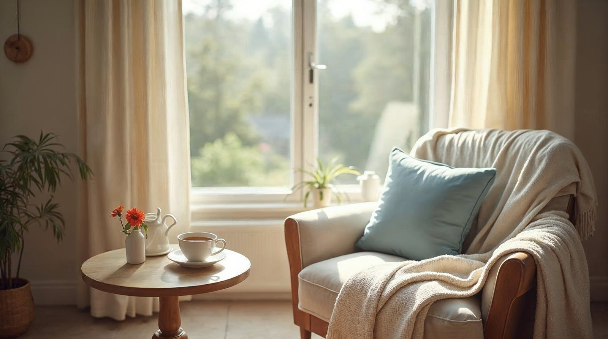
폐렴 치료는 끝났는데 기침과 숨참, 기운 없음이 남아 있을 때 회복기는 어떻게 살피나요?
폐렴 치료를 마친 뒤에도 기침, 계단 숨참, 쉽게 지치는 몸이 몇 주 남는 경우가 많습니다. 회복기에 흔한 변화와 다시 확인이 필요한 경우를 나누고, 잠·식사·움직임을 되찾는 순서와 한의원에서 함께 살피는 부분을 정리했습니다.
수정 2026-11-26

아침마다 재채기와 콧물이 심할 때는 어떤 점을 살펴보나요?
아침마다 재채기와 맑은 콧물이 몰리면 알레르기 비염 경향의 코가 이불 밖 찬 공기와 마른 방, 짧은 잠에 예민해진 경우가 많아 코와 함께 몸이 찬지, 잠과 소화를 여쭙고, 이비인후과가 먼저인 신호도 정리했습니다.
수정 2026-11-26
코로나를 앓고 몇 주가 지나도 기침·피로·머리 멍함이 남는 코로나 후유증은 어떻게 살피나요?
코로나는 지나갔는데 기침, 쉽게 지치는 몸, 머리가 멍한 느낌, 잠의 흔들림이 몇 주에서 몇 달 이어지는 코로나 후유증을 정리했습니다. 병원에서 먼저 확인할 것과 일상에서 속도를 맞추는 법, 한의원에서 함께 살피는 것을 담았습니다.
수정 2026-11-26
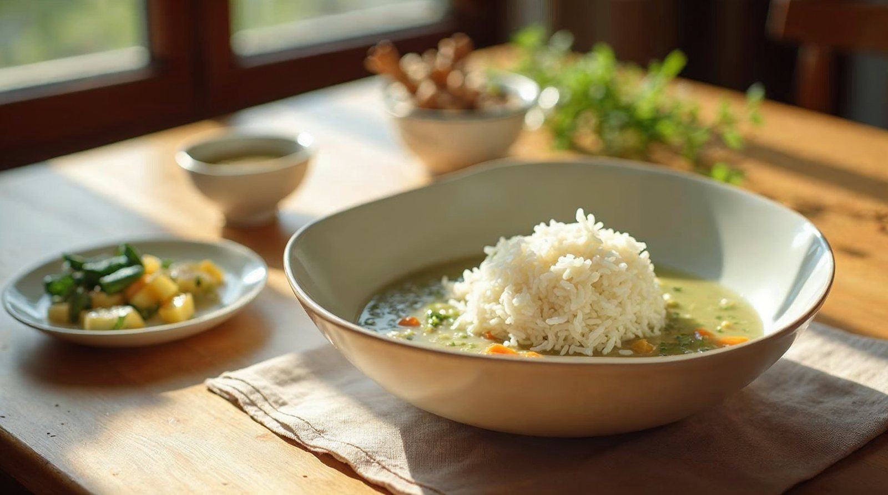
속쓰림은 별로 없는데 목이 칼칼하고 헛기침이 이어지는 역류성 후두염은 어떻게 살피나요?
위산이 목 위쪽까지 올라와 목이 칼칼하고 헛기침, 쉰 목소리, 뭔가 걸린 느낌이 이어지는 역류성 후두염을 정리했습니다. 감기·후비루와의 차이, 저녁 식사와 잠자리 습관, 기록할 것, 한의원에서 함께 살피는 부분을 담았습니다.
수정 2026-11-26

목이 쉬고 목소리가 잘 안 나올 때, 강사·교사는 무엇부터 살피나요?
목소리를 많이 쓴 뒤 쉰 목소리는 대개 목을 쉬게 하고 촉촉하게 지키며 살핍니다. 3주 넘게 이어지거나 삼킴 곤란·목 멍울·피 섞인 가래가 있으면 이비인후과 확인이 먼저입니다.
수정 2026-11-26
미세먼지가 심한 날마다 목이 칼칼하고 기침·코막힘이 이어질 때는 무엇을 살피나요?
미세먼지 '나쁨' 예보가 뜬 날이면 목이 칼칼하고 따가우며 마른기침과 코막힘, 눈 가려움이 함께 오는 분이 많습니다. 미세먼지가 코와 목, 기관지에 어떤 자극을 주는지와 생활에서 줄이는 방법을 정리했습니다.
수정 2026-11-26

늘 한쪽 코만 막혀 있을 때, 비중격만곡과 비염은 어떻게 나눠 살피나요?
한쪽 코만 늘 답답하거나 좌우가 번갈아 막히는 코막힘을 비중격만곡, 비염, 비갑개 부종으로 나눠 정리했습니다. 구조 문제와 점막 붓기의 차이, 잠과 입 호흡에 미치는 영향, 생활 관리와 한의원에서 함께 살피는 부분을 담았습니다.
수정 2026-11-26

코막힘과 누런 콧물이 오래가는 만성 부비동염(축농증)은 어떻게 살피나요?
코막힘과 누런 콧물, 얼굴 압박감, 목 뒤로 넘어가는 콧물이 석 달 넘게 이어지면 만성 부비동염을 생각해 봅니다. 눈 주위가 붓거나 시야가 이상하고, 심한 두통·고열이 오면 이비인후과나 응급실이 먼저입니다.
수정 2026-11-26
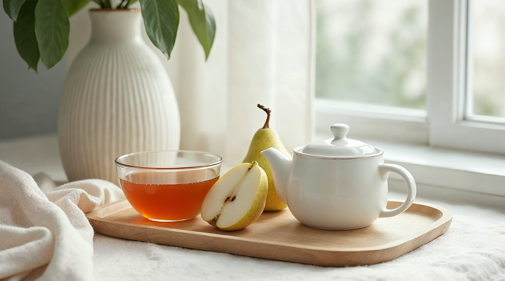
감기도 아닌데 가래가 몇 달째 끓는 만성 가래는 무엇을 살펴봐야 하나요?
열도 없고 감기도 지나갔는데 아침마다 가래가 끓고 하루 종일 목을 가다듬게 되는 만성 가래를 정리했습니다. 가래의 색과 양으로 무엇을 나눠 보는지, 생활에서 줄일 수 있는 것과 진료실에서 여쭙는 것을 담았습니다.
수정 2026-11-26
목이 늘 칼칼하고 뭔가 걸린 듯한 만성 인후염·매핵기는 어떻게 살피나요?
목이 몇 달째 칼칼하고 무언가 걸린 듯한 느낌은 만성 인후염이나 매핵기에서 흔합니다. 목 사용·역류·후비루·긴장과 잠을 함께 살피며, 이비인후과 진료와 나란히 갑니다.
수정 2026-11-26

2주 넘게 기침이 이어질 때는 언제 병원 검사를 받아야 하나요?
기침이 2주를 넘기면 미루지 말고 살펴볼 때이고, 3주가 넘었다면 흉부 엑스레이 같은 내과 확인을 먼저 또는 함께 권합니다. 그다음 잠·역류·넘어가는 콧물·마른 방·목 긴장을 함께 살핍니다.
수정 2026-11-26
폐와 심장 검사는 괜찮다는데 숨이 끝까지 안 쉬어지는 느낌(호흡곤란감)은 어떻게 살피나요?
숨을 크게 들이쉬어도 끝까지 차오르지 않는 느낌, 하품하듯 깊은 숨을 쉬어야 개운한 느낌이 이어질 때 숨 습관, 자세, 체력, 긴장 가운데 무엇이 얽혀 있는지 나눠 보는 법을 정리했습니다.
수정 2026-11-26
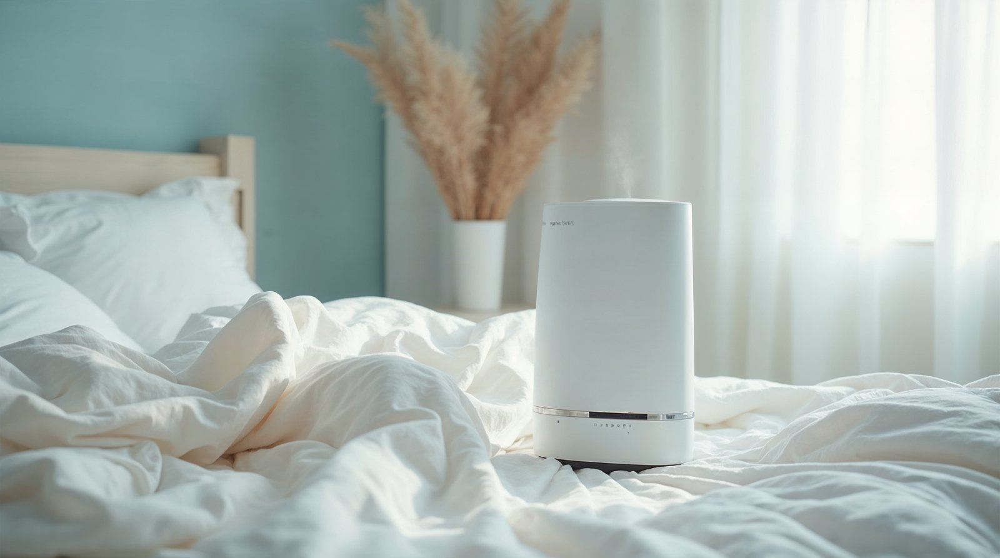
가을만 되면 목이 바싹 마르고 가래 없는 마른기침이 이어질 때는 어떻게 살피나요?
선선한 바람이 불기 시작하면 목이 칼칼하고 간질거리며 가래 없는 마른기침이 몇 주씩 이어지는 분이 많습니다. 가을 공기가 목에 어떤 영향을 주는지, 감기 뒤 기침·비염·역류와 어떻게 나눠 살피는지 정리했습니다.
수정 2026-11-26
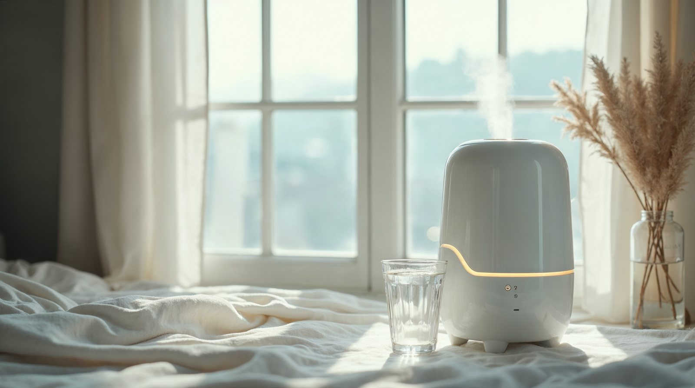
천식으로 흡입기를 쓰고 있을 때 한의원에서는 무엇을 함께 살피나요?
천식은 기관지가 예민해져 기침·쌕쌕거림·숨참이 되풀이되는 병으로, 흡입기 치료는 처방대로 이어 갑니다. 한의원에서는 그 곁에서 잠·소화·피로와 계절에 따른 숨의 흔들림을 함께 살핍니다.
수정 2026-11-26
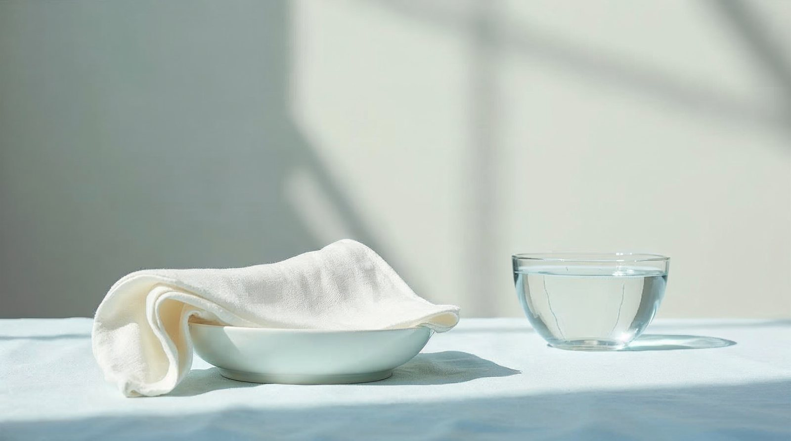
눈이 가렵고 충혈되며 맑은 눈물이 흐르는 알레르기 결막염은 어떻게 살피나요?
눈이 간질간질하고 자꾸 비비게 되며 흰자가 붉어지는 알레르기 결막염은 꽃가루, 먼지, 반려동물, 계절과 생활 습관에 따라 오르내립니다. 안과 진료와 함께 생활에서 살필 것, 한의원에서 함께 보는 부분을 정리했습니다.
수정 2026-11-26

어른인데 코피가 자주 날 때는 무엇을 확인하고, 집에서는 어떻게 멈추나요?
세수하다, 코를 풀다, 자고 일어나 베개에서 코피를 발견하는 일이 잦은 어른의 코피를 정리했습니다. 건조함·코 만지는 습관·혈압·드시는 약까지 무엇을 확인하는지, 집에서 바르게 멈추는 법과 진료실에서 여쭙는 것을 담았습니다.
수정 2026-11-26
어른인데 감기를 달고 살 때, 면역력이 떨어진 건지 무엇부터 살피나요?
한 번 걸리면 오래가고, 낫는가 싶으면 또 걸리는 어른의 잦은 감기를 정리했습니다. 잠·식사·피로·환경 가운데 무엇이 회복을 늦추는지, 병원에서 확인해 볼 것과 한의원에서 함께 살피는 것을 담았습니다.
수정 2026-11-26

독서실 난방 때문에 코가 마르고 코피가 살짝 날 때는 어떻게 살피나요?
난방이 강한 독서실에 오래 있으면 코 안이 말라 딱지가 생기고 살짝 피가 비칠 수 있어, 앉는 자리와 코를 만지는 습관을 먼저 묻고 코 안을 촉촉하게 지키는 방법부터 함께 정리합니다.
수정 2026-11-26

임용시험 수업 실연을 연습하다 목이 자주 잠길 때는 어떻게 하나요?
수업 실연 연습으로 목이 자주 잠긴다면 연습 사이 물 마시기, 숨을 내쉬며 말하기, 연습 시간을 나눠 쉬는 시간 두기부터 해 보고, 자주 반복되면 목의 긴장과 호흡, 잠을 함께 살핍니다.
수정 2026-11-26

환절기 아침에 공원을 걷고 나면 재채기와 맑은 콧물이 쏟아질 때는 어떻게 살피나요?
환절기 찬 공기나 꽃가루, 미세먼지가 많은 날 아침 산책 뒤 재채기와 맑은 콧물이 이어지는 경우가 있어, 증상이 나타나는 날씨와 시간, 집 안 환경을 먼저 묻고 산책 시간과 준비를 함께 조정합니다.
수정 2026-11-24
노량진 학원 강의실 냉난방 속에서 목이 칼칼하고 코가 마를 때는 어떻게 하나요?
냉난방이 하루 종일 켜진 강의실에서 목이 칼칼하고 코가 마를 때는 바람을 피하는 자리, 물을 조금씩 자주 마시기, 잠자리 습도 맞추기부터 해 보고, 오래가면 목·코 상태와 잠을 함께 살핍니다.
수정 2026-11-26

혼자 사는 수험생이 감기에 걸렸을 때 공부와 쉬기는 어떻게 정하나요?
혼자 지내는 수험생이 감기에 걸리면 열이 있는 날은 공부량을 줄이고 미지근한 물과 소화 쉬운 음식으로 쉬는 것이 먼저이며, 감기 뒤 기침과 피로가 오래가면 잠과 식사, 회복 흐름을 함께 살핍니다.
수정 2026-11-26
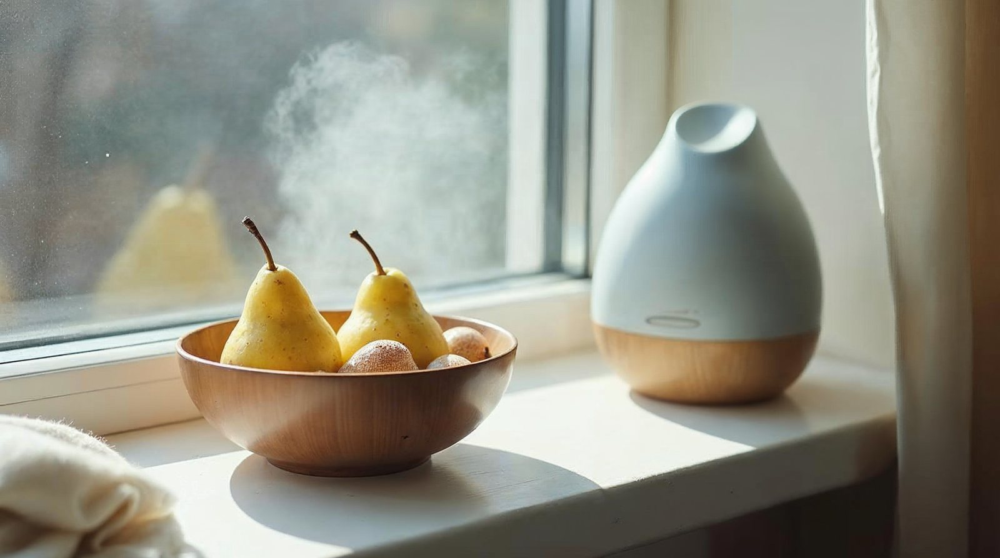
환절기에 목이 건조하고 칼칼할 때는 어떻게 관리하나요?
환절기에 목이 건조하고 칼칼한 것은 실내 건조와 먼지, 수분 부족, 입으로 숨쉬기와 관련된 경우가 많아 습도와 수분 섭취를 점검하고, 삼키기 어렵거나 숨이 차거나 고열이 있거나 목소리 변화가 3주 넘게 이어지면 이비인후과 진료를 권합니다.
수정 2026-11-26
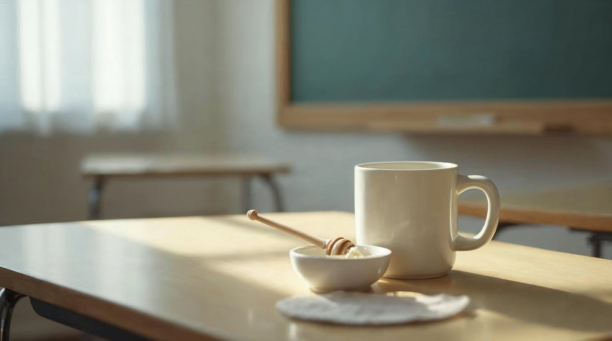
강의를 많이 해서 목소리가 자주 쉬는 분은 어떻게 관리하면 좋을까요?
강사, 교사, 상담직처럼 목소리를 많이 쓰는 분의 쉰 목소리는 말하는 시간, 물 마시는 습관, 잠, 역류 증상을 먼저 묻고 목을 쉬게 하는 방법을 함께 정리합니다.
수정 2026-11-24

코가 막힌 것인지 콧물이 목으로 넘어가는 것인지 어떻게 구분해 말하나요?
숨이 코로 잘 안 통하는 느낌인지, 목 뒤로 무언가 넘어가 헛기침이 나는 느낌인지 나눠 말씀해 주시면 생활 환경과 잠 중 어느 쪽을 먼저 살펴볼지 정하기 쉽습니다.
수정 2026-11-26
담배를 끊으려는데 아침마다 가래가 끓을 때는 어떻게 살피나요?
흡연 중이거나 금연을 시작한 뒤 아침 가래와 기침은 흔히 이야기되는 불편이라, 흡연량과 기간, 가래 모양, 숨찬 정도를 먼저 묻고 금연을 이어갈 수 있게 생활 습관을 함께 정리합니다.
수정 2026-11-24
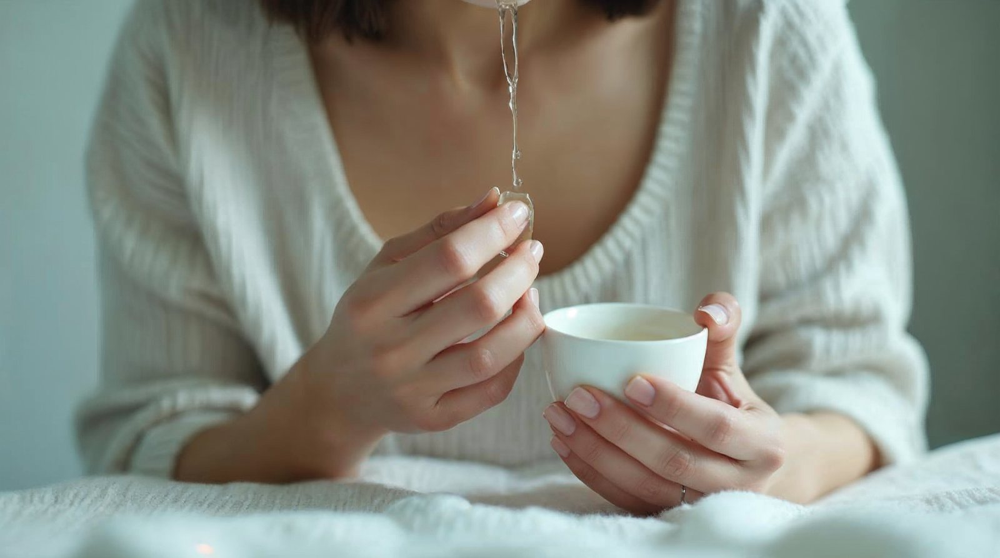
목 뒤로 콧물이 넘어가서 자꾸 헛기침을 하게 될 때는 어떻게 살피나요?
목 뒤로 콧물이 넘어가는 느낌과 잦은 헛기침은 비염, 부비동 상태, 건조한 실내, 위산 역류와 관련이 있을 수 있어 증상이 심한 시간과 콧물 색, 함께 오는 증상을 먼저 묻습니다.
수정 2026-11-24
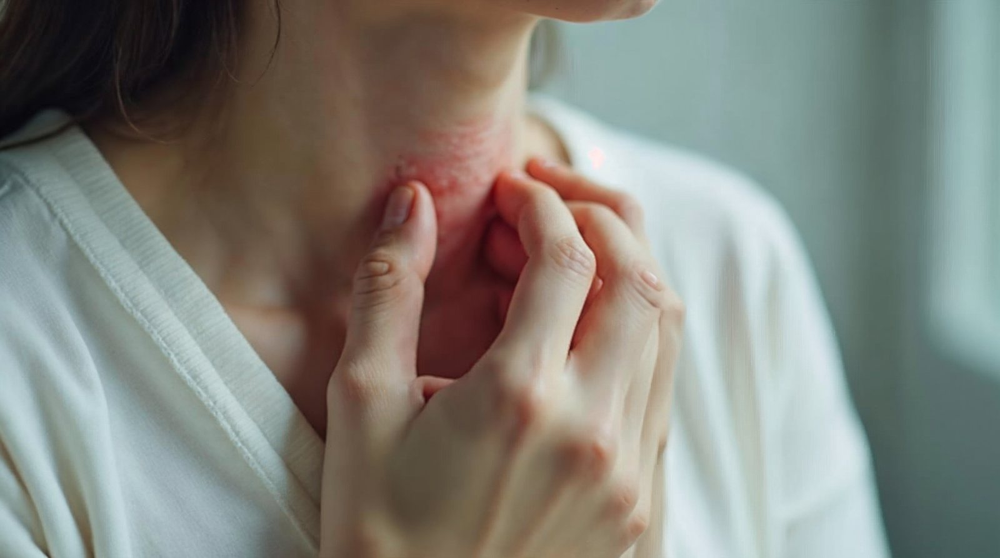
감기는 나았는데 기침만 몇 주째 남아 있을 때는 어떻게 살피나요?
감기 뒤 기침이 몇 주 이어지는 것은 예민해진 기도가 회복되는 데 시간이 걸리는 경우가 많아, 기침이 이어진 기간과 심한 시간대, 가래, 잠과 실내 환경을 먼저 여쭙습니다.
수정 2026-11-26
자고 일어나면 입이 바짝 마르고 목이 칼칼할 때는 어떻게 살피나요?
아침마다 입이 마르고 목이 칼칼한 것은 코막힘으로 입을 벌리고 자거나, 실내가 건조하거나, 코골이와 관련이 있는 경우가 많아 잠자는 모습과 코 상태를 먼저 묻습니다.
수정 2026-11-24
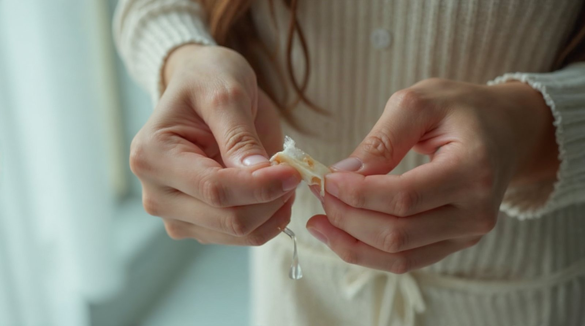
아침에 일어나자마자 재채기와 맑은 콧물이 쏟아질 때는 어떻게 살피나요?
아침 재채기와 맑은 콧물은 침실의 먼지, 아침의 온도 차, 건조한 공기에 코가 예민하게 반응하는 경우가 많아 침구 관리와 실내 환경, 증상이 심한 계절을 먼저 묻고 생활 속 관리 방법을 함께 정리합니다.
수정 2026-11-24

미세먼지 많은 날 목이 따갑고 기침이 날 때는 어떻게 지내면 좋을까요?
미세먼지가 심한 날 목이 따갑고 기침이 나는 경우 외출 시간과 마스크 착용, 실내 환기 방법, 물 마시는 양을 함께 점검하고, 숨이 차거나 쌕쌕거리면 바로 진료를 받도록 안내합니다.
수정 2026-11-26
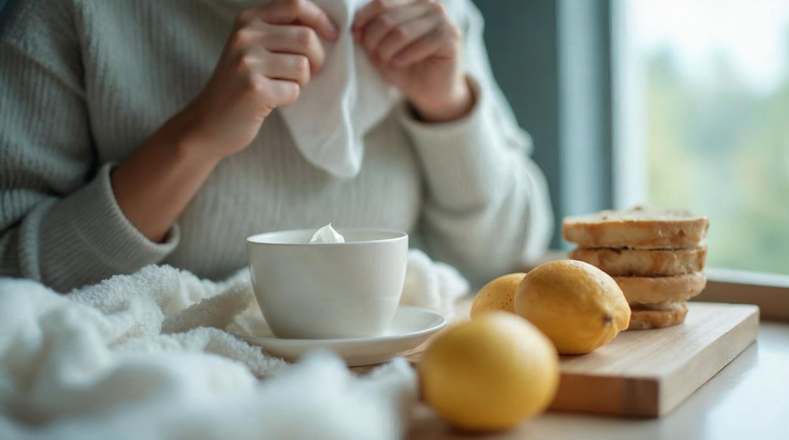
마른기침과 가래 섞인 기침은 어떻게 구분해서 기록하나요?
기침할 때 가래가 나오는지, 목이 간질간질해서 나는지, 언제 심해지는지를 나눠 적어 오시면 어떤 확인이 먼저 필요한지 판단하는 데 도움이 됩니다.
수정 2026-11-26
겨울 출근길 찬 공기를 마시면 기침이 터질 때는 어떻게 살피나요?
찬 공기를 마시면 기침이 나는 것은 기도가 예민한 상태일 수 있어, 기침이 나는 상황과 쌕쌕거림 여부, 계단이나 언덕에서 숨찬 정도를 먼저 묻고 필요한 검사를 안내합니다.
수정 2026-11-26